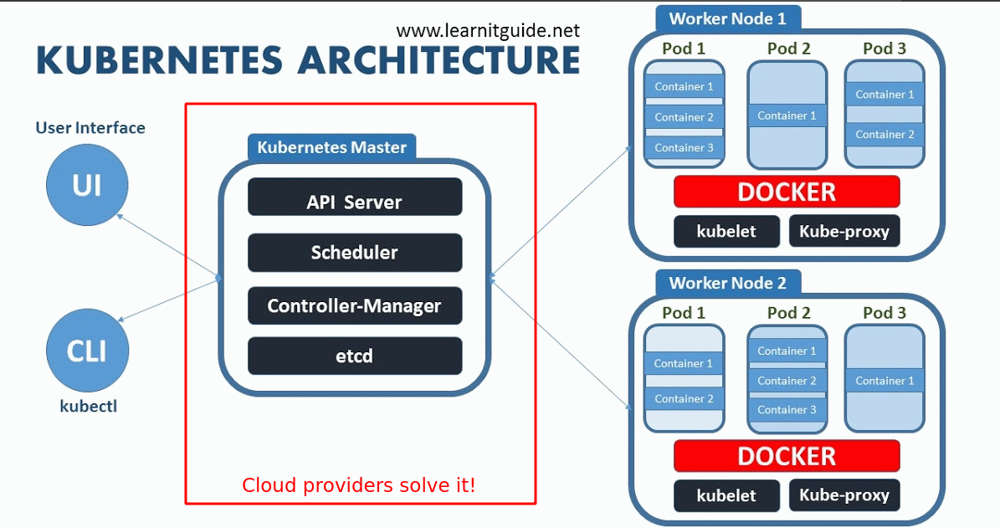

Kubernetes for Python developers
Alex Koval for KharkivPy
Created: 2019-12-07 Sat 11:33
QR-code

Who am I
avkoval (bitbucket, github)
http://alex.koval.kharkov.ua
- Web (Python, Django) developer in
https://ua2web.com - DevOps in https://cupermind.com
- Backend Architect
Why kubernetes
- Fast scaling (container based, declarative objects configuration)
- Fault tolerant (e.g. failures on nodes are not critical)
- Containers are good abstractions:
- e.g. local Docker provides similar environment
- cluster auto scaling scaling is easy
- especially on well known providers like AWS, Google, Azure
Deployment strategies
- RollingUpdate (efs)
- Recreate (All existing Pods are killed before new ones are created when)
- GP2 (RWO)
- Canary deployments strategy (ingress-canary): when we deploy several versions of same app
- only part of users will use new app version
- others will see older
Why (when) not
- For a small application could be overkill as it requires a lot of overhead, e.g. several nodes, masters, other services will eat a lot of CPU/RAM resources making this unprofitable.
- Complexity is increased. Running your app on a VM is much simpler option. Bugs of Kubernetes, the need to upgrade the cluster itself and other things make it overall more difficult to handle.
Architecture
https://platform9.com/blog/kubernetes-enterprise-chapter-2-kubernetes-architecture-concepts/

infrastructure questions not solved by kubernetes
- required from cloud:
- load balancers
- persistent volumes
Working with cluster - basics
Based on minikube as simplest to try.
Install minikube, kubectl, helm
sudo pacman -S minikube
sudo pacman -S kubectl
yay kubernetes-helm # aur/kubernetes-helm-bin
Start minikube
minikube start --vm-driver=virtualbox
Point to local minikube docker
environment & helm init
eval $(minikube docker-env)
Helm
Helm repo
add repo
helm repo add stable https://kubernetes-charts.storage.googleapis.com/ helm repo add brigade https://brigadecore.github.io/charts
search
helm search repo stable
install
helm install mymysql stable/mysql
Installing some ready packages
kubectl common commands
namespaces
kubectl pods
node
Create own app
Dockerfile
file:///home/k/dev/kharkivpy-kubernetes/djangoapp/Dockerfile.prod
- tini as init
FROM python:3.7-stretch
LABEL tier=prod
ENV TERM xterm-256color
ENV PYTHONUNBUFFERED 1
ENV TINI_VERSION v0.18.0
ADD https://github.com/krallin/tini/releases/download/${TINI_VERSION}/tini /tini
RUN chmod +x /tini
...
ENTRYPOINT ["/tini", "--"]
Helm
Helm provides a template, create it for example this way:
mkdir -p helm.new && cd helm.new && rm -rf helloworld
helm create helloworld
Now, lets compare…
Install this app chart
Providers
https://kubernetes.io/docs/concepts/cluster-administration/cloud-providers/
- Google Kubernetes Engine https://cloud.google.com/kubernetes-engine/
Azure
Amazon AWS
EKS
EKS/Fargate
Digital Ocean

- Good price
- Works well (~year), cluster upgrades done by them

A few words about openshift
https://cloudowski.com/articles/10-differences-between-openshift-and-kubernetes/
Benefits
- Better UI
- Authorization / project / user management out of the box
- Deployments
Start
Our experience
- More complex to support from DevOps perspective, less info, most of it locked inside of paid subscription for RedHat account
- As it is less popular the bugs are difficult to fix. Cluster upgrades are not that easy.
Complex topics
Helm - where to store files/configuration variables/secrets?
[X]Helm Charts are better to be stored with project[ ]Where to store configuration?- We are going to use harshicorp vault for this vaultproject.io
[ ]AWS parameter store?- get parameters for version xxx and put it back as yaml to helm and helm will apply it
- TODO: check helm-ssm plugin
[ ]consul[ ]etcd
Common problems
- Your app should follow https://12factor.net/
- We had problems with systems like Magento:
- requires very fast storage for initial deployment phase
- requires container to be online when building
- For example problems with persistent disk storage
- efs is expensive
- gp2 is cheap but it won't support RollingUpdate
Presentation build with
QR-code
Who am I
avkoval (bitbucket, github)
http://alex.koval.kharkov.ua
- Web (Python, Django) developer in
https://ua2web.com - DevOps in https://cupermind.com
- Backend Architect